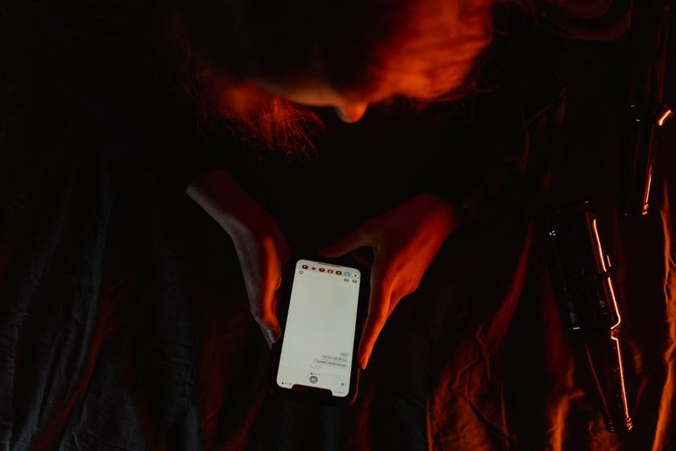

Stillhour: a small app for the parts of the day you'd like to protect
Not a habit tracker with streaks to keep alive. Stillhour helps you mark off a quiet hour, run a plain timer for one task, and close the day with a short prompt — then gets out of the way.
See how it worksWhat it does
Six small, unglamorous tools. Nothing gamified, nothing that asks for your attention more than it needs to.
Quiet Hours
Set a window where notifications hold until it ends. No exceptions to configure — that's the point.
One-Task Timer
Name one task, start a plain countdown, and see nothing else on the screen while it runs.
Wind-Down Prompt
An evening cue that asks a single short question, then suggests it's a fine time to stop.
Paper Log
A private, text-only log of quiet hours kept — no charts, no comparisons to anyone else.
Three Lines
An optional prompt to jot three lines about the day, kept locally, never shared or scored.
Transition Cue
A gentle marker between two blocks of a day — leaving work, arriving home — so one doesn't bleed into the other.
How it works
Three small steps. No setup wizard, no account required to try it.
Pick a window
Choose a stretch of the day — first thing, or last thing — to mark as quiet.
Let it run
The app holds notifications and shows a plain screen for the length you set.
Close it out
A short prompt at the end helps you notice how the window went, then it's done.
Built by the people who write here
Stillhour came out of the same notes that became this journal. It's meant as a quiet tool, not a system to optimize — most days, you'll open it, start a timer, and close it again within a minute.
A few quick questions
Is Stillhour free to try?
Yes. The core tools — quiet hours, the one-task timer, and the wind-down prompt — are free to use.
Does it track health or fitness data?
No. Stillhour is about attention and routine, not health metrics. It doesn't collect or display medical or fitness information.
Do I need an account?
You can try the timer and quiet-hours tools without one. An account is only needed if you want your log kept across devices.
Where can I read more about the ideas behind it?
The Quiet Routine journal covers the thinking in more depth — start with the essay on single-tasking or ultradian rhythm.
Try a single quiet hour today
No commitment beyond the next sixty minutes.
See how it works